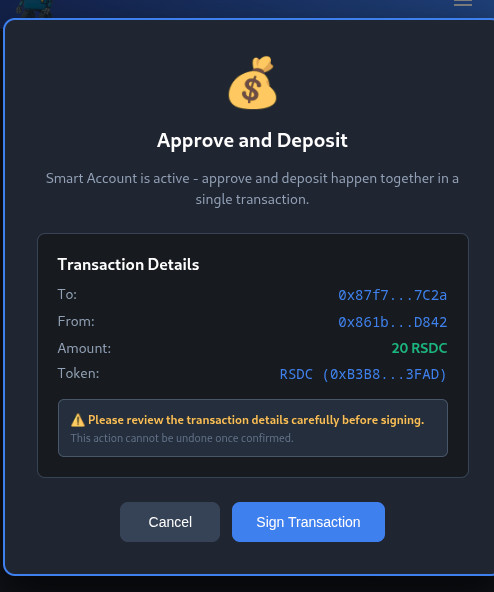
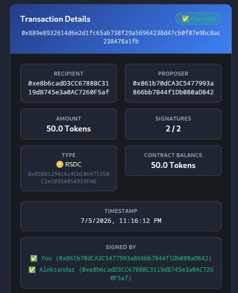

Dizajn i implementacija EIP-7702-kompatibilnog Ethereum višepotpisnog digitalnog novčanika
Odbrana master rada
Sadržaj
- Problem i motivacija
- Osnove: nalozi, ugovori, višepotpisni protokoli
- EIP-7702: mehanizam delegacije koda
- Implementacija:
MultiSigiApprover - Bezbednosna analiza
- Demonstracija
- Rezultati na Sepolia mreži
- Ograničenja i zaključak
Problem: ograničenja standardnog EOA naloga
Ethereum razlikuje dva tipa naloga: EOA (nalog u vlasništvu eksternog korisnika, kontrolisan jednim privatnim ključem) i nalog pametnog ugovora.
- Jedinstvena tačka otkaza — kompromitovanje jednog ključa kompromituje ceo nalog, bez mogućnosti zaustavljanja ili opoziva.
- Odsustvo višepotpisne autorizacije — nije moguće zahtevati saglasnost više strana pre transakcija visoke vrednosti.
- Loše korisničko iskustvo pri ERC-20 depozitu — standard zahteva
approve()pa tek zatimtransferFrom()— dve transakcije, dva puta gas, dve potvrde.
Osnove: nalozi i pametni ugovori
EOA
- Kontrolisan 256-bitnim privatnim ključem (ECDSA)
- Nema kod — samo prenosi vrednost
- Svaka transakcija potpisana jednim ključem
Pametni ugovor
- Kod trajno zapisan na blokčejnu
- Izvršava se determinističko na EVM-u
- Objavljuje se posebnom transakcijom
Višepotpisni protokoli (M-od-N)
Transakcija se izvršava tek kada M od ukupno N ovlašćenih potpisnika da saglasnost:
\[ 1 \leq M \leq N \]
Tok interakcije: propose → sign → execute.
Ugovor pamti potpisnike, prag i predložene transakcije — ne postoji pojedinac sa unilateralnim
pristupom sredstvima.
EIP-7702: delegacija koda za EOA
- Uveden Pectra nadogradnjom Ethereum mreže — aktivirana 7. maja 2025.
- Novi tip transakcije — tip 4 — sa poljem
authorization_list - Svako ovlašćenje: identifikator mreže, adresa ciljnog ugovora,
nonce— potpisano privatnim ključem EOA-a - EOA zadržava svoju adresu i ključeve — samo privremeno izvršava tuđi kod
0xef0100 + adresa_ciljnog_ugovora (20 bajtova)0xef je rezervisan kao nevažeći EVM bajtkod (EIP-3541) — ne meša se sa pravim kodom ugovora.
Bezbednosna svojstva delegacije
- Zaštita od replay napada —
nonceu ovlašćenju mora odgovarati trenutnom nonce-u EOA-a - Vezanost za mrežu — identifikator mreže sprečava preuzimanje ovlašćenja sa testne na glavnu mrežu
- Kontekst izvršavanja —
address(this)u delegiranom kodu vraća adresu EOA-a, analognodelegatecall-u - Bezstanjski ugovor — delegirani ugovor ne sme se oslanjati na sopstveni
storage, jer je EOA-ovstorageprazan - Opoziv: nova transakcija tipa 4 sa
ZeroAddresskao ciljem — kod slot se prazni
EIP-7702 kao unapređenje korisničkog iskustva
Klasičan tok — dve transakcije

EIP-7702 tok — trofazni: aktivacija, atomski depozit, opoziv

Implementacija — arhitektura i ugovor MultiSig
React 18 + TypeScript + ethers.js v6 · Solidity + Foundry · veb ekstenzija (Manifest V3) · bez sopstvenog servera — sva poslovna logika je u ugovorima na mreži.
mapping(address => bool) private signers;
uint256 public minSignatures;
uint256 private nonce;
mapping(bytes32 => Transaction) private transactions;
mapping(address => mapping(bytes32 => bool)) private transactionSigners;
function sign(bytes32 txHash) external onlySigner {
Transaction storage transaction = transactions[txHash];
transactionSigners[msg.sender][txHash] = true;
transaction.signedCount++;
emit Signed(txHash, msg.sender);
}
function execute(bytes32 txHash) external onlySigner {
require(transaction.signedCount >= minSignatures, "Not enough signatures");
...
}Izvor: contracts/src/contracts/MultiSig.sol, odeljak 3.2 rada
Implementacija — ugovor Approver
function approveToken(address token, address spender, uint256 amount) public returns (bool) {
bool success = IERC20(token).approve(spender, amount);
require(success, "ERC-20 approval failed");
return true;
}
function approveAndDeposit(
address token, address multiSigAddress, bytes32 txHash, uint256 depositAmount
) external {
this.approveToken(token, multiSigAddress, depositAmount);
this.depositTokenToMultiSig(multiSigAddress, txHash, depositAmount);
}this. je ključan: kada se kod izvršava u kontekstu delegiranog EOA-a,
address(this) vraća adresu EOA-a, pa se odobrenje izdaje u ime samog korisnika.
Izvor: contracts/src/contracts/Approver.sol, odeljak 3.3 rada
Bezbednosna analiza — nonce kod samoposlate autorizacije
export async function setupDelegation(signer: ethers.Wallet, targetAddress: string) {
const currentNonce = await signer.getNonce();
const auth = await signer.authorize({
address: targetAddress,
nonce: currentNonce + 1,
});
...
}Transakcija sama troši jedan nonce pre nego što se ovlašćenje obradi:
\[ \texttt{nonce}_{\text{autorizacija}} = \texttt{nonce}_{\text{transakcija}} + 1 \]
tx.nonce = 2,
authorization.nonce = 3, chainId = 0xaa36a7. Nakon potvrde,
eth_getCode vraća 0xef0100 + adresu Approver ugovora — delegacija
potvrđena direktno na mreži.
Demo — kompletan tok
Snimak demonstrira kompletan radni tok — objavljivanje MultiSig
ugovora, predlaganje i potpisivanje transakcije, klasičan i EIP-7702 depozit, i izvršavanje — sve
funkcionalnosti sistema u jednom scenariju.
Ako se video ne učita: TODO link ka snimku —
TODO · lokalni fallback: media/demo.mp4
TODO — dodati fajl
Rezultati — merenje gasa na Sepolia mreži
| Scenario | Transakcija(e) | Potpisi | Ukupno gasa |
|---|---|---|---|
| Klasičan depozit | 2 (approve + deposit) | 2 | 113.695 |
| EIP-7702 depozit | 1 (approveAndDeposit) | 1 | 69.949 |
\[ \frac{113{,}695 - 69{,}949}{113{,}695} \approx 38\% \]
Ušteda od približno 38% gasa, uz jedno umesto dva potpisivanja — izmereno na stvarnim transakcijama demonstracionog scenarija (poglavlje 4 rada).
Ograničenja
- Testirano isključivo na Sepolia testnoj mreži
- Nema nezavisnu bezbednosnu reviziju ugovora
- Upravljanje ključem bez BIP-39 mnemoničkih fraza ili hardverskih novčanika
- Fokus namerno ograničen na
MultiSig+ EIP-7702 - Social Recovery i nativni ETH tokovi van obima rada
- Nema prikaz istorije transakcija (npr. Etherscan API)
Zaključak
- Kombinacija M-od-N višepotpisnog ugovora i EIP-7702 delegacije rešava dva ograničenja EOA naloga bez migracije identiteta
- Korisnik atomski odobrava i deponuje ERC-20 tokene u jednoj transakciji, uz ~38% manje gasa
- Demonstrirano stvarnim transakcijama na Sepolia mreži
Budući rad
- Nezavisna bezbednosna revizija, BIP-39 / hardverski novčanici
- Istorija transakcija (Etherscan API), podrška za više mreža
- Generalizacija EIP-7702 obrasca na druge višekorak tokove van ERC-20 depozita
Hvala na pažnji
Pitanja?
Projekat prvobitno razvijen u okviru Ethereum NS hackathon-a, gde su Luka Ćirić i Aleksandar Stojanović osvojili prvo mesto.
Rezerva — klijentski pozivi ugovora
// Uz aktivnu delegaciju — jedna transakcija
const delegated = new ethers.Contract(signer.address, ApproverJson.abi, signer);
await delegated.approveAndDeposit(tokenAddress, multiSigContract, txHash, amount, { type: 2 });
// Bez delegacije — dve odvojene transakcije
await tokenContract.approve(multiSigContract, amount);
await multisig.depositToken(txHash, amount);Izvor: extension/src/utils/multisig.ts, odeljak 3.4 rada
Rezerva — snimci ekrana demonstracije


Rezerva — ključne reference
- V. Buterin, "Ethereum Whitepaper", 2014.
- G. Wood, "Ethereum Yellow Paper", 2024.
- EIP-7702: "Set EOA account code", eips.ethereum.org, 2024.
- EIP-7600: "Hardfork Meta — Pectra", eips.ethereum.org, 2025.
- BIP-11: "M-of-N Standard Transactions", 2011.
- Safe Ecosystem Foundation, "Safe: Smart account overview", 2023.
- EIP-4337: "Account abstraction using alt mempool", 2021.
- Uniswap, "Permit2 and Universal Router", 2022.